ANCIENT HISTORY
Archaeological investigation has found evidence of irrigaton in area lackingsufficient natural rainfall tosupport crops for rainfed agriculturae. some of the earliest known use of the technology dates to the 6th millennium BC in Khuzistan in the south-west of Iran. The site of Choga Mami, in present-day Iraq on the border with Iran, is believed to be the earliest to show the first canalirrigation in operation at about 6000 BCE. Irrigation was used as amean of manipulation of water in the alluvial plains of the indusvally civilization, the application of whichis estimated to have begun around 4500 BC and increased the size and prosperity of their agriculture settlements. Large-scale agriculture was practiced, with an extensive network of canals used for the purpose of irrigation.Ancient Egyptians practiced basin irrigation using the flooding of the Nile to inundate land plots water has been until the ferile sediment has settled before the engineers returned the surplus to the watercourse.
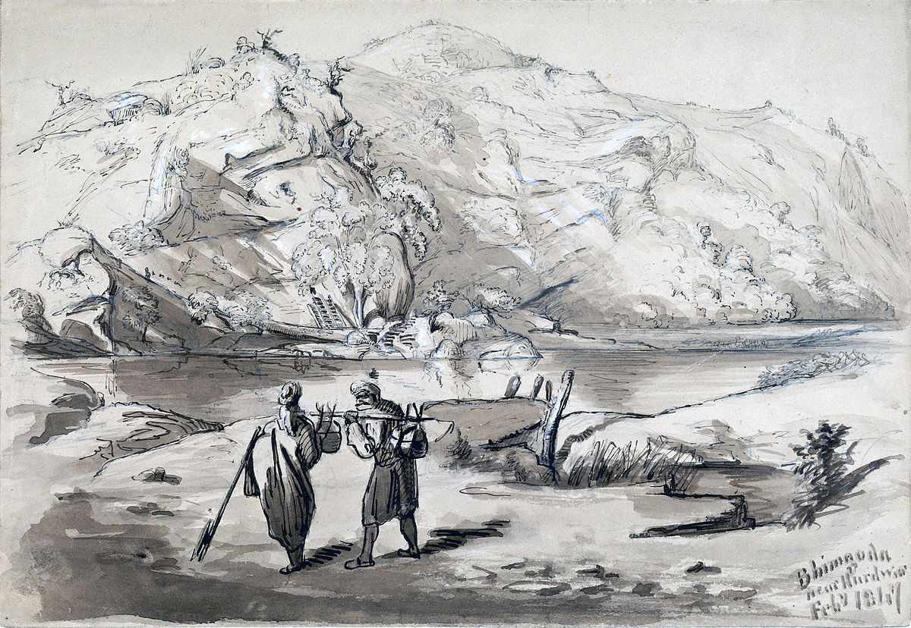MODERN HISTORY
The scale of irrigation increased dramatically over the 20th century. In 1800, 8 million hectares globally were irrigation, in 1950, 94 million hectares, and in 1990, 235 million hectares. By 1990, 30% of the global food production came from irrigation land. Irrigation techniques across the globe inciuded canals redirecting surface water, groundwater pumping, and dilverting water from dams. In the 20th century, global anxiety specifically about the American cotton monopoly fueled many empirical irrigation projects: Britain began developing irrigation in India, the Ottomans in Egypt, the French in Algeria, the Portuguese in Anogola, the Germans in Togo, and Soviets in Central Asia. Additionally, some of these large nationwide schemes failed to pay off at all, costing more than any benefit gained from increased crop yields.
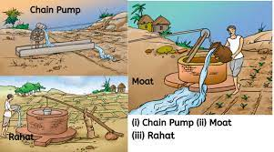TYPES OF IRRIGATION
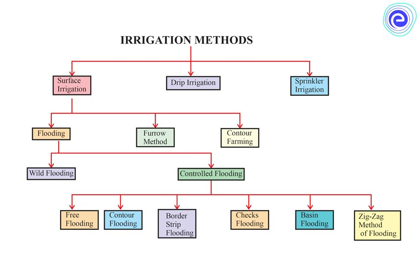There are mainly 3 types of irrigation:
- Surface irrigation
- Drip irrigation
- Sprinkler irrigation
Surface irrigation
The term “surface irrigation” refers to systems that deliver water to crops using a gravity-fed, overland flow of water. Surface irrigation conveyance and distribution systems are among the first engineering innovations of humans, dating back to more than 6,000 years ago. This Fact Sheet provides general information on key aspects of this historic technology that is still in use in many parts of the world.
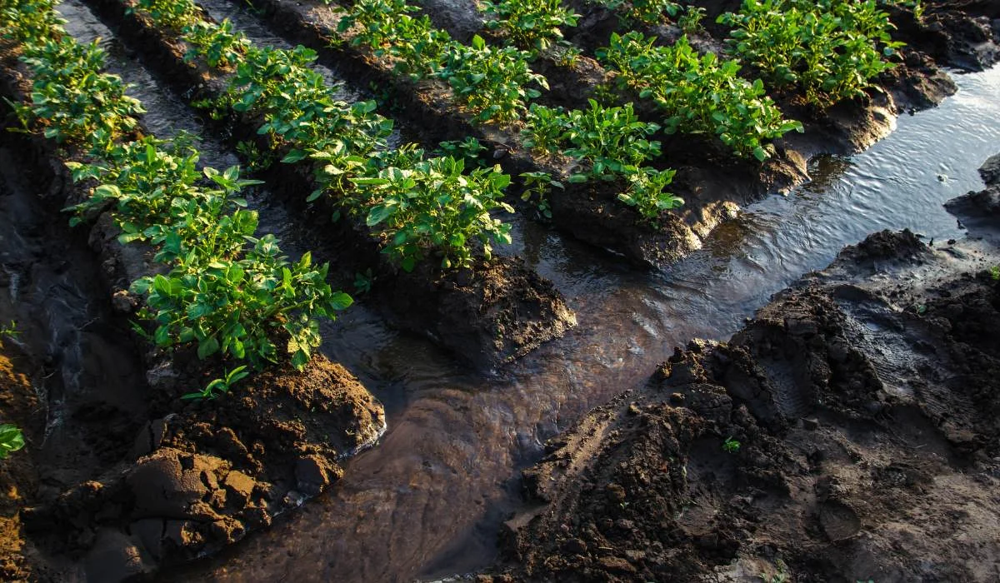There are 3 of surface irrigation:
- Flooding method
- Furrow method
- Contour farming
Flooding method
Probably one of the oldest methods of irrigating fields is surface irrigation (also known as flood or furrow irrigation), where farmers flow water down small trenches running through their crops. Humans' first invention after learning how to grow plants from seeds was probably a bucket. Ancient people must have been strong from having to haul buckets full of water to pour on their first plants. For most of human history, people did not have mechanized spray irrigation systems to apply water to crop fields.
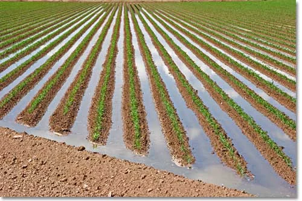This is divided in to 2 types:
- Wild flooding
- Controlled Flooding
Wild flooding
Wild flooding is when water is allowed to flow freely across farmland. It is a relatively cheap form of irrigation, but uses water inefficiently and some areas get more than others.

Controlled flooding
Free flooding, basin flooding, flooding by contour laterals, zigzag method of flooding, border strip flooding and check flooding are the 6 types of controlled flooding which is a subcategory of surface irrigation. I will show you all the details about them in the blog.
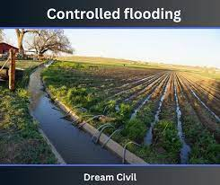There are 6 types of Controlled irrigation:
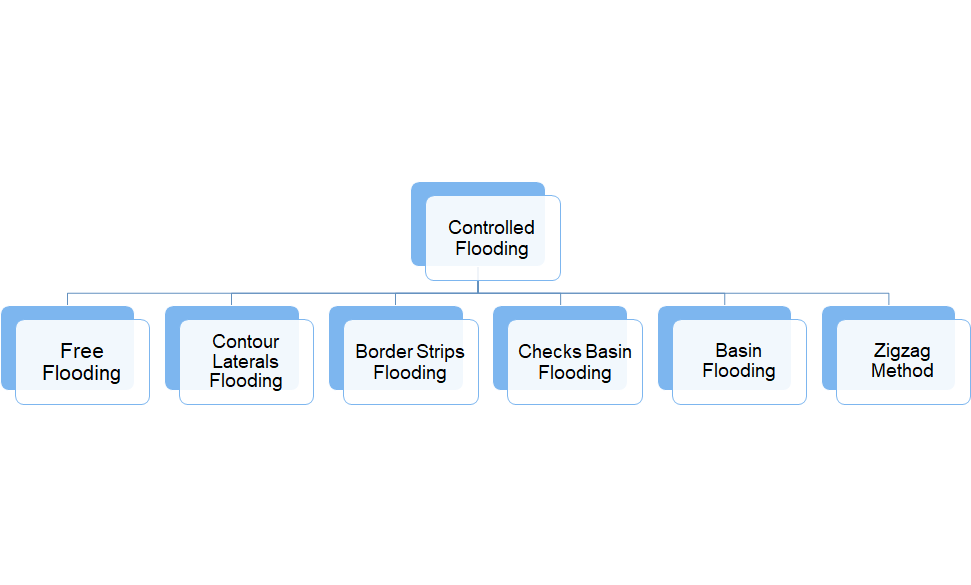Furrow method
Furrow irrigation is a method of laying out the water channels in such a way where gravity plays the role of providing just enough water for suitable plants to grow. It is usually made by the planned placement of ridges and furrows. It is a kind of surface irrigation system. A ridge is the part of the layout of the field that is elevated at different angles based on the type of soil. This is actually where the plants are planted. The furrows are the troughs that let the water flow through it.
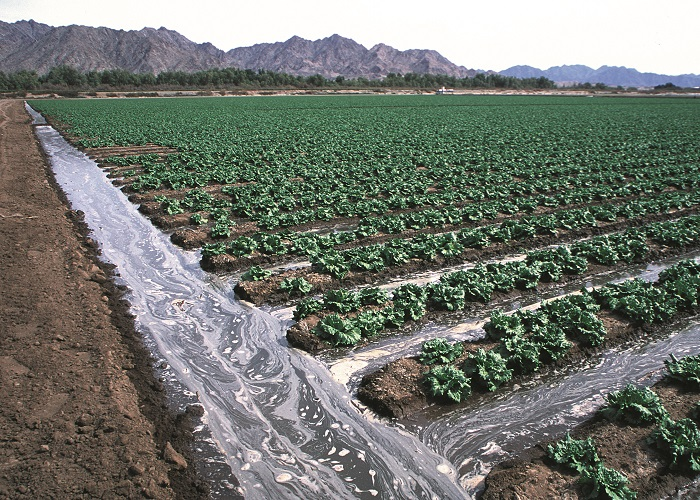Contour farming
Contour-furrow irrigation can save irrigation water, reduce erosion, and mean better crops on sloping fields. You waste little water by surface runoff or by over irrigation at the upper end of the furrows. In comparison with down -slope irrigation, water in contour furrows moves more slowly across the field and, therefore, does not erode or wash the soil. You get a more even distribution of water over the field, making good growing conditions for all of the plants. This pays off in better yields and in higher quality products. Irrigation water flowing down sloping fields is wasting our basic soil and water resources at a very serious rate. Contour-furrow irrigation can be a deciding factor in maintaining our agricultural production and our standard of living.
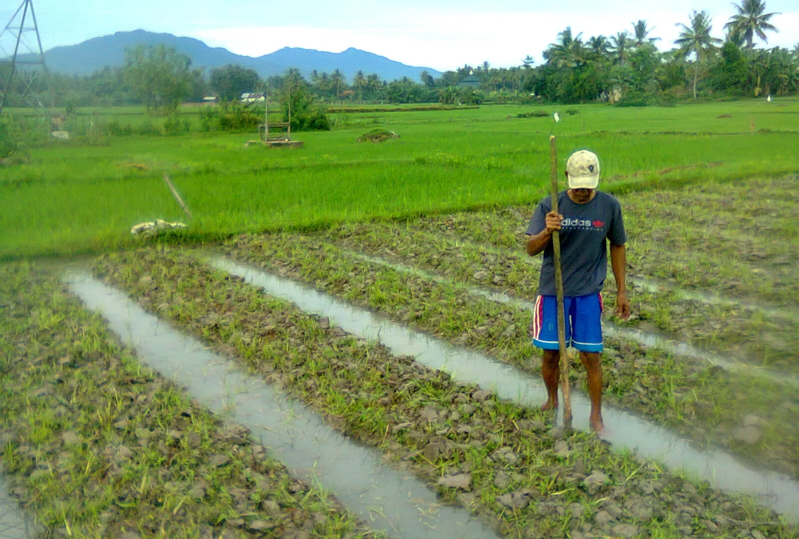Drip irrigation
Drip irrigation is sometimes called trickle irrigation and involves dripping water onto the soil at very low rates (2-20 litres/hour) from a system of small diameter plastic pipes fitted with outlets called emitters or drippers. Water is applied close to plants so that only part of the soil in which the roots grow is wetted, unlike surface and sprinkler irrigation, which involves wetting the whole soil profile. With drip irrigation water, applications are more frequent (usually every 1-3 days) than with other methods and this provides a very favourable high moisture level in the soil in which plants can flourish.
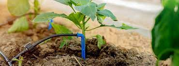Sprinkler irrigation
Sprinkler irrigation system allows application of water under high pressure with the help of a pump. It releases water similar to rainfall through a small diameter nozzle placed in the pipes. Water is distributed through a system of pipes, sprayed into air and irrigates in most of the soil type due to wide range of discharge capacity.
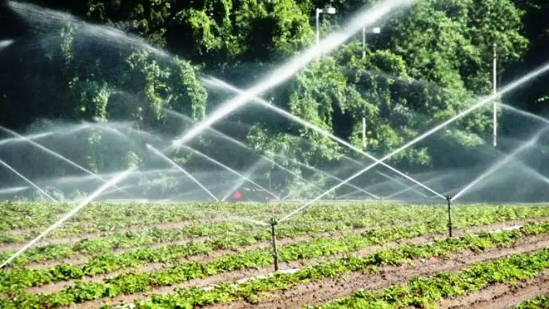BENFITS OF IRRIGATION
- Increase in Agricultual Productivity
- Irrigation reduces regional disparity
- Economic development
- Hydropower generation
- Domestic and Industrial water supply
CONTACT US
email:irrigation@gmail.com
CONCLUSION
After careful evaluation and consideration, it is evident that implementing an irrigation system for a community service project is highly beneficial. The conclusion drawn is that such a system offers numerous advantages, making it an excellent choice for sustainable development and addressing the needs of the community.By investing in such a project, the community can improve their livelihoods, enhance food security, and pave the way for sustainable development and prosperity.